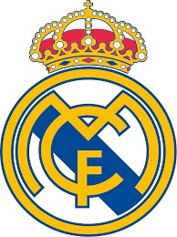

Sejarah Berdiri
Real Madrid Club de Fútbol (pengucapan bahasa Spanyol [reˈal maˈðɾið ˈkluβ ðe ˈfutβol]; Royal Madrid Football Club, umumnya dikenal sebagai Real Madrid, adalah klub sepak bola profesional yang berbasis di Madrid, Spanyol.
Didirikan pada tahun 1902 sebagai Madrid Football Club, secara tradisional mengenakan kostum kandang putih. Kata Real ("dari kerajaan") Spanyol dan dianugerahkan ke klub oleh Raja Alfonso XIII pada tahun 1920 bersama-sama dengan mahkota kerajaan di lambang klub. Klub ini telah memainkan pertandingan kandang di Stadion Santiago Bernabéu dengan kapasitas 85.454 di pusat kota Madrid sejak tahun 1947.
Real madrid merupakan salah satu klub sepak bola terkaya di dunia dalam hal pendapatan, senilai €757,3 juta dan total aset yang senilai €3,8 miliar/$4,2 miliar di 2019.Ini adalah salah satu dari tiga klub untuk tidak pernah terdegradasi dari liga papan atas sepak bola Spanyol, bersama dengan Athletic Bilbao dan Barcelona. Real madrid juga merupakan club dengan torehan piala UCL terbanyak. Real Madrid memiliki banyak persaingan lama, terutama El Clásico dengan Barcelona dan El Derbi madrileño dengan Atlético Madrid.
Real madrid memantapkan dirinya sebagai kekuatan utama dalam sepak bola Spanyol dan Eropa selama tahun 1950. Di dalam negeri, real madrid juga merupakan salah satu klub terbaik abad ke-20 menurut FIFA. Klub ini menjuarai Liga Champions 3 musim berturut-turut dibawah kepelatihan Zinedine Zidane dan dengan mesin golnya yaitu pemain terbaik dunia Cristiano Ronaldo. Dalam kompetisi domestik, klub ini telah meraih 35 gelar La Liga (rekor), 20 gelar Piala Raja Spanyol, 12 Piala Super Spanyol, 1 Copa Eva Duarte, 1 Copa de la Liga. Di kompetisi tingkat Eropa dan Dunia, real madrid telah meraih 14 gelar Piala Champions Eropa/Liga Champions UEFA (rekor), 2 Piala UEFA/Liga Eropa UEFA, 5 Piala Super UEFA, dan 9 kejuaraan dunia antar klub (3 Piala Interkontinental , 5 Piala Dunia Antarklub FIFA dan 1 Piala Ibero-American).